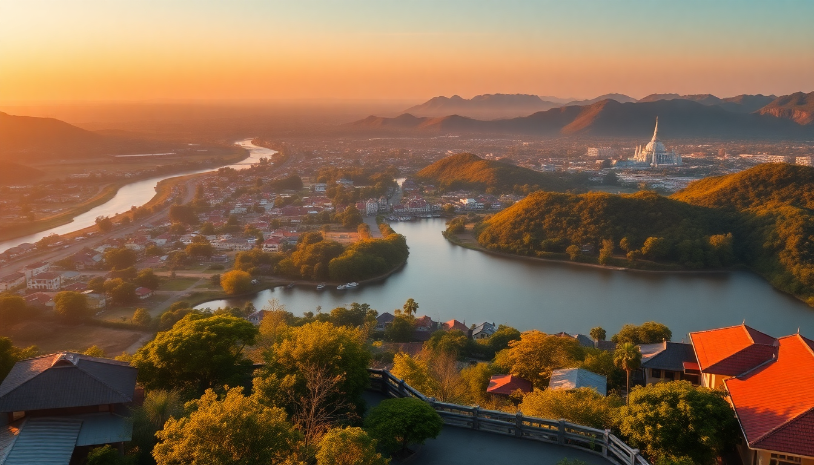

Best Day Trips from Bangkok: Ayutthaya, Kanchanaburi & Floating Markets

You’ve got a few days in Bangkok, and the temples are starting to blur together. That’s the moment to get out of the city—not for a second city, but for a day trip that actually feels like a different world. I’ve done all three of the classic escapes: Ayutthaya’s temple ruins, Kanchanaburi’s war history and river scenery, and the floating market at Damnoen Saduak. Each one is worth your time, but only if you go in with the right plan. Here’s what worked for me, and what didn’t.
Is Ayutthaya worth the trip from Bangkok?
Yes, absolutely—if you’re into history and don’t mind heat. Ayutthaya was the capital of Siam until the Burmese sacked it in 1767, and what’s left is a sprawling collection of temple ruins and Buddha statues. The site is a UNESCO World Heritage property, and you can see the highlights in a single day.
I took the train from Hua Lamphong Station to Ayutthaya Station—about 90 minutes on a standard third-class carriage. It cost something like 20 baht. No air-con, but the windows open and the ride is part of the experience. Once there, I rented a bicycle from a shop near the station (50 baht for the day) and cycled between sites. That’s the move.
- Wat Mahathat: The famous Buddha head entwined in tree roots. Go early before the tour buses arrive.
- Wat Phra Si Sanphet: The three big chedis that appear on every postcard. No standing Buddha left, but the scale is impressive.
- Wat Ratchaburana: Climb the steep stairs into the central prang for a view of the old city.
- Wat Chaiwatthanaram: On the riverbank, quieter than the central ruins, and beautiful in late afternoon light.
Lunch tip: Pa Lek Boat Noodles on U Thong Road—serves a small bowl of pork noodles for 12 baht. Order five bowls and you’re full. Overrated: the “Ayutthaya floating market” near the train station. It’s a synthetic tourist zone. Skip it.
How do you visit Kanchanaburi in one day?
Kanchanaburi is a longer day—about 2.5 hours each way from Bangkok—but the history makes it worth the early start. The main draw is the Bridge on the River Kwai and the Death Railway built by Allied POWs under Japanese command during WWII.
I booked a minivan through a small tour operator near Khao San Road for 800 baht, which included transport and a guide. You can also take a train from Thonburi Station to Kanchanaburi, but that adds time. The minivan option let me see more.
- Bridge on the River Kwai: Walk across it. It’s a functioning railway bridge, so trains still cross. The metal trusses are original; the middle span was rebuilt after bombing.
- JEATH War Museum: Inside a bamboo hut built to replicate POW conditions. Sparse, emotional, worth the 50 baht entry.
- Death Railway ride: From Kanchanaburi Station to Tham Krasae Bridge, about 30 minutes. The track clings to a cliff over the river. I sat on the floor of an open carriage door, feet dangling—not for the faint of heart.
- Hellfire Pass: 45 minutes north of town by taxi. A cutting through solid rock that POWs dug by hand. The audio guide at the memorial museum is excellent.
Overrated: the “River Kwai” itself. It’s a brown river. The real story is the railway. I’d pack a lunch from Jae Oil (a local restaurant near the bridge that does good pad see ew) because Kanchanaburi’s tourist-trap restaurants near the bridge are overpriced.
Which floating market should you actually go to?
There are three main floating markets within day-trip distance of Bangkok. I’ve been to all of them. Only one is worth your time—and it’s not the one you see on Instagram.
Damnoen Saduak is the famous one—the one with the women in wide-brimmed hats paddling longtail boats piled with fruit. It’s also the most touristy. I went on a weekday at 7 a.m. and still had to dodge boat traffic. The vendors sell to tour groups, not locals. Prices are 2x to 3x what you’d pay in a Bangkok market. That said, if you want the photo, this is where you get it. Go early, take a motorboat tour (300 baht per person), and buy a coconut ice cream for the experience. Then leave.
Amphawa is the better choice. It’s 30 minutes south of Damnoen Saduak, and it’s a floating market that locals actually use. The food stalls line the canal, and boats sell grilled seafood—prawns, squid, scallops—cooked over charcoal right on the water. I ate a plate of grilled river prawns for 150 baht. Amphawa is busiest on weekends, and it stays open into the evening, which makes it a good late-afternoon trip.
Taling Chan is inside Bangkok’s city limits, near the western edge. It’s tiny—maybe 20 boats—and feels like a neighborhood market. Good for a quick visit if you don’t want the full day trip. I wouldn’t go out of my way for it.
Can you combine two day trips in one day?
Technically yes, but I wouldn’t. A few tour operators in Bangkok sell a “combo tour” that hits Damnoen Saduak in the morning and the Bridge on the River Kwai in the afternoon. I tried this once. It’s a rushed, exhausting day where you spend more time on the minivan than at the sites. The floating market is at its worst by 10 a.m. (crowded, hot), and you arrive in Kanchanaburi just in time for the midday sun. Pick one trip and do it well.
What’s the best way to book these trips?
You have three options: DIY, a small-group tour, or a private driver. I’ve done all three.
- DIY (train or bus): Cheapest, most flexible, but requires planning. For Ayutthaya, take the train from Hua Lamphong. For Kanchanaburi, the train from Thonburi Station leaves around 7:45 a.m. For Damnoen Saduak, take a minibus from Southern Bus Terminal (Sai Tai Mai).
- Small-group tour: Good for Kanchanaburi because the history benefits from a guide. I used Mama Travel & Tour near Khao San Road—not luxury, but competent. Expect 700-1,200 baht per person.
- Private driver: Best for a custom schedule. I hired a driver through 12Go Asia for 2,500 baht for a full day to Ayutthaya. Worth it if you’re in a group of three or four.
Where should you stay in Bangkok before or after?
If you’re doing day trips, base yourself somewhere with easy access to transport. I’ve stayed at Hotel Once Bangkok near the river—good for the Chao Phraya ferry to the train station. For budget, Lub d Bangkok Siam is a hostel with private rooms and a social vibe. For something mid-range, Siam@Siam Design Hotel has a rooftop pool and is steps from the BTS at National Stadium Station.
FAQ
How long does it take to get from Bangkok to Ayutthaya by train? About 90 minutes from Hua Lamphong Station to Ayutthaya Station. The train runs hourly. Buy a ticket at the station—no advance booking needed for third class.
Is the Damnoen Saduak floating market a tourist trap? Yes, but it’s also the only floating market that looks like the photos. Go at 7 a.m. on a weekday to avoid the worst crowds. Don’t eat at the boat restaurants—overpriced. Buy fruit from a canal-side vendor instead.
Can you visit Kanchanaburi without a tour? Yes. Take the train from Thonburi Station (7:45 a.m.) to Kanchanaburi Station (arrives around 10 a.m.). Walk to the bridge, then take a local bus or taxi to Hellfire Pass. Return by minibus from Kanchanaburi bus station.
Conclusion
- Ayutthaya is the best all-around day trip: easy train, bicycle-friendly ruins, cheap food.
- Kanchanaburi is the most meaningful: the Death Railway and Hellfire Pass stay with you.
- Damnoen Saduak is the most photogenic but also the most touristy—go early, eat cheap, leave fast.
- Amphawa beats Damnoen Saduak for food and atmosphere.
- Don’t try to combine two in one day. Pick one, and give it the full morning and afternoon.